Parametric smoothed regression lines for item response probability functions
Source:R/itemGAM.R
itemGAM.RdThis function uses a generalized additive model (GAM) to estimate response curves for items that do not seem to fit well in a given model. Using a stable axillary model, traceline functions for poorly fitting dichotomous or polytomous items can be inspected using point estimates (or plausible values) of the latent trait. Plots of the tracelines and their associated standard errors are available to help interpret the misfit. This function may also be useful when adding new items to an existing, well established set of items, especially when the parametric form of the items under investigation are unknown.
itemGAM( item, Theta, formula = resp ~ s(Theta, k = 10), CI = 0.95, theta_lim = c(-3, 3), return.models = FALSE, ... ) # S3 method for itemGAM plot( x, y = NULL, par.strip.text = list(cex = 0.7), par.settings = list(strip.background = list(col = "#9ECAE1"), strip.border = list(col = "black")), auto.key = list(space = "right", points = FALSE, lines = TRUE), ... )
Arguments
| item | a single poorly fitting item to be investigated. Can be a vector or matrix |
|---|---|
| Theta | a list or matrix of latent trait estimates typically returned from |
| formula | an R formula to be passed to the |
| CI | a number ranging from 0 to 1 indicating the confidence interval range. Default provides the 95 percent interval |
| theta_lim | range of latent trait scores to be evaluated |
| return.models | logical; return a list of GAM models for each category? Useful when the GAMs should be inspected directly, but also when fitting multidimensional models (this is set to TRUE automatically for multidimensional models) |
| ... | additional arguments to be passed to |
| x | an object of class 'itemGAM' |
| y | a |
| par.strip.text | plotting argument passed to |
| par.settings | plotting argument passed to |
| auto.key | plotting argument passed to |
References
Chalmers, R., P. (2012). mirt: A Multidimensional Item Response Theory Package for the R Environment. Journal of Statistical Software, 48(6), 1-29. doi: 10.18637/jss.v048.i06
See also
Author
Phil Chalmers rphilip.chalmers@gmail.com
Examples
# \donttest{ set.seed(10) N <- 1000 J <- 30 a <- matrix(1, J) d <- matrix(rnorm(J)) Theta <- matrix(rnorm(N, 0, 1.5)) dat <- simdata(a, d, N, itemtype = '2PL', Theta=Theta) # make a bad item ps <- exp(Theta^2 + Theta) / (1 + exp(Theta^2 + Theta)) item1 <- sapply(ps, function(x) sample(c(0,1), size = 1, prob = c(1-x, x))) ps2 <- exp(2 * Theta^2 + Theta + .5 * Theta^3) / (1 + exp(2 * Theta^2 + Theta + .5 * Theta^3)) item2 <- sapply(ps2, function(x) sample(c(0,1), size = 1, prob = c(1-x, x))) #' # how the actual item looks in the population plot(Theta, ps, ylim = c(0,1))baditems <- cbind(item1, item2) newdat <- cbind(dat, baditems) badmod <- mirt(newdat, 1) itemfit(badmod) #clearly a bad fit for the last two items#> item S_X2 df.S_X2 RMSEA.S_X2 p.S_X2 #> 1 Item_1 26.608 24 0.010 0.323 #> 2 Item_2 14.613 26 0.000 0.964 #> 3 Item_3 35.063 25 0.020 0.087 #> 4 Item_4 30.993 26 0.014 0.229 #> 5 Item_5 20.266 25 0.000 0.733 #> 6 Item_6 26.641 24 0.010 0.321 #> 7 Item_7 25.524 25 0.005 0.433 #> 8 Item_8 29.095 24 0.015 0.217 #> 9 Item_9 29.228 25 0.013 0.254 #> 10 Item_10 34.572 24 0.021 0.075 #> 11 Item_11 32.517 24 0.019 0.115 #> 12 Item_12 43.634 25 0.027 0.012 #> 13 Item_13 19.525 24 0.000 0.723 #> 14 Item_14 24.384 25 0.000 0.497 #> 15 Item_15 24.072 25 0.000 0.515 #> 16 Item_16 33.682 25 0.019 0.115 #> 17 Item_17 58.681 26 0.035 0.000 #> 18 Item_18 28.826 24 0.014 0.227 #> 19 Item_19 19.221 23 0.000 0.688 #> 20 Item_20 38.570 25 0.023 0.041 #> 21 Item_21 24.132 26 0.000 0.568 #> 22 Item_22 28.951 23 0.016 0.182 #> 23 Item_23 22.083 26 0.000 0.684 #> 24 Item_24 29.721 24 0.015 0.194 #> 25 Item_25 22.775 26 0.000 0.646 #> 26 Item_26 27.243 24 0.012 0.293 #> 27 Item_27 22.161 26 0.000 0.680 #> 28 Item_28 22.798 26 0.000 0.644 #> 29 Item_29 30.499 24 0.016 0.169 #> 30 Item_30 31.316 24 0.017 0.145 #> 31 item1 185.602 28 0.075 0.000 #> 32 item2 135.647 28 0.062 0.000#> item S_X2 df.S_X2 RMSEA.S_X2 p.S_X2 #> 1 Item_1 29.980 24 0.016 0.185 #> 2 Item_2 21.004 26 0.000 0.742 #> 3 Item_3 26.195 24 0.010 0.343 #> 4 Item_4 24.582 25 0.000 0.486 #> 5 Item_5 27.717 24 0.012 0.272 #> 6 Item_6 34.249 23 0.022 0.062 #> 7 Item_7 34.346 25 0.019 0.101 #> 8 Item_8 25.295 23 0.010 0.335 #> 9 Item_9 21.434 25 0.000 0.668 #> 10 Item_10 30.231 23 0.018 0.143 #> 11 Item_11 23.284 23 0.004 0.444 #> 12 Item_12 18.241 24 0.000 0.791 #> 13 Item_13 19.337 24 0.000 0.734 #> 14 Item_14 26.281 24 0.010 0.339 #> 15 Item_15 15.675 24 0.000 0.899 #> 16 Item_16 25.369 24 0.008 0.386 #> 17 Item_17 51.496 25 0.033 0.001 #> 18 Item_18 17.211 23 0.000 0.799 #> 19 Item_19 20.136 23 0.000 0.634 #> 20 Item_20 37.402 24 0.024 0.040 #> 21 Item_21 30.726 25 0.015 0.198 #> 22 Item_22 23.889 22 0.009 0.353 #> 23 Item_23 13.622 25 0.000 0.968 #> 24 Item_24 43.777 24 0.029 0.008 #> 25 Item_25 27.211 25 0.009 0.345 #> 26 Item_26 17.295 24 0.000 0.836 #> 27 Item_27 27.196 25 0.009 0.346 #> 28 Item_28 16.918 25 0.000 0.885 #> 29 Item_29 15.302 24 0.000 0.912 #> 30 Item_30 21.808 23 0.000 0.532#### Pure non-parametric way of investigating the items library(KernSmoothIRT) ks <- ksIRT(newdat, rep(1, ncol(newdat)), 1) plot(ks, item=c(1,31,32))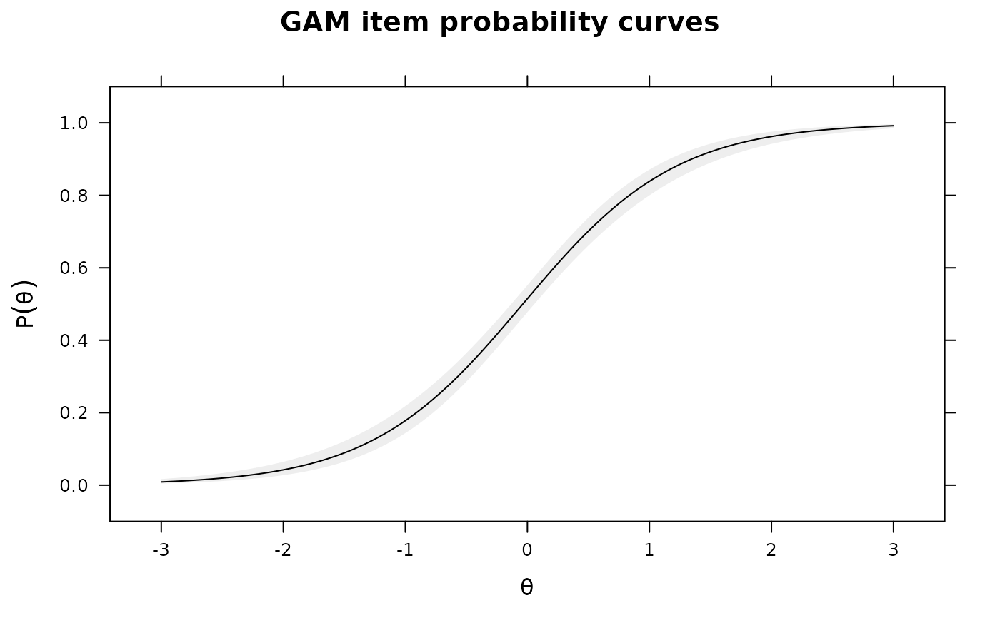par(ask=FALSE) # Using point estimates from the model Theta <- fscores(mod) IG0 <- itemGAM(dat[,1], Theta) #good item IG1 <- itemGAM(baditems[,1], Theta) IG2 <- itemGAM(baditems[,2], Theta) plot(IG0)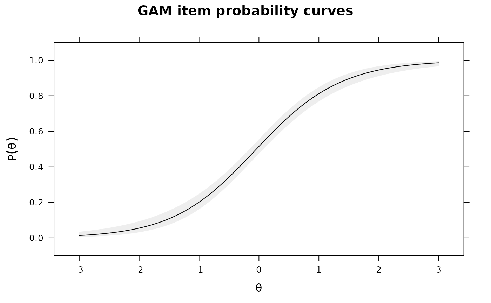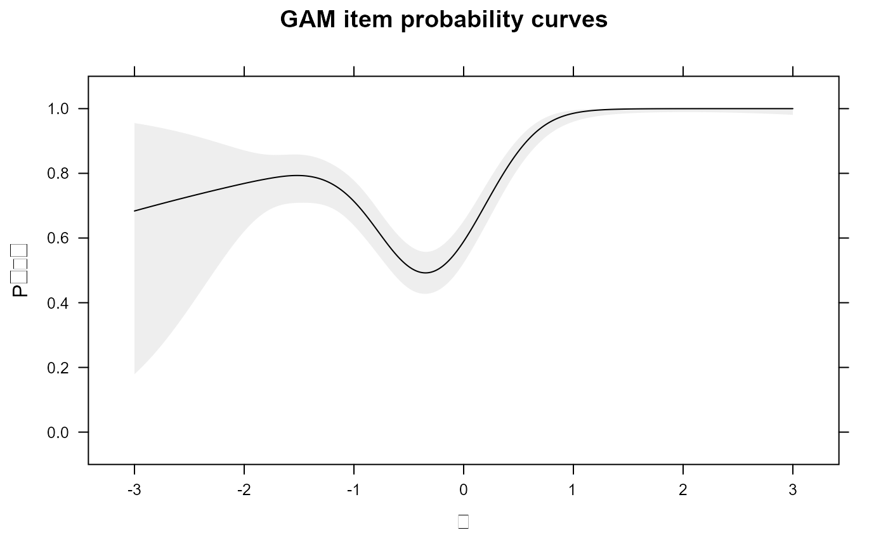# same as above, but with plausible values to obtain the standard errors set.seed(4321) ThetaPV <- fscores(mod, plausible.draws=10) IG0 <- itemGAM(dat[,1], ThetaPV) #good item IG1 <- itemGAM(baditems[,1], ThetaPV) IG2 <- itemGAM(baditems[,2], ThetaPV) plot(IG0)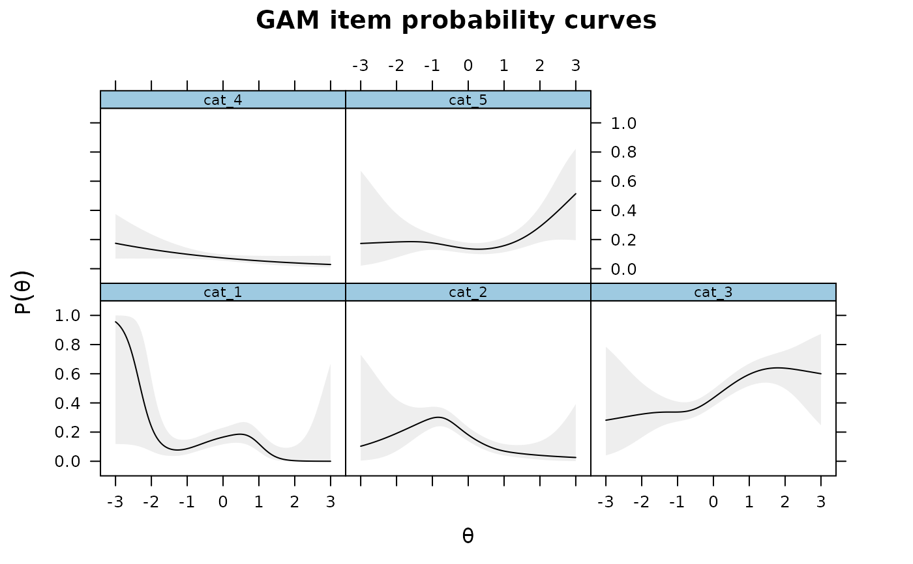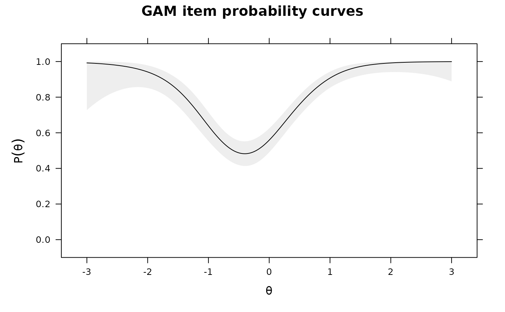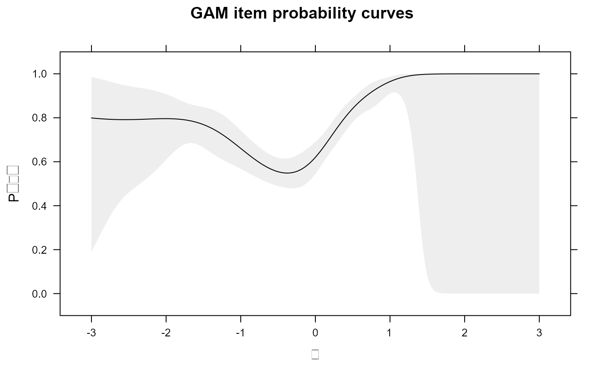## for polytomous test items SAT12[SAT12 == 8] <- NA dat <- key2binary(SAT12, key = c(1,4,5,2,3,1,2,1,3,1,2,4,2,1,5,3,4,4,1,4,3,3,4,1,3,5,1,3,1,5,4,5)) dat <- dat[,-32] mod <- mirt(dat, 1) # Kernal smoothing is very sensitive to which category is selected as 'correct' # 5th category as correct ks <- ksIRT(cbind(dat, SAT12[,32]), c(rep(1, 31), 5), 1) plot(ks, items = c(1,2,32))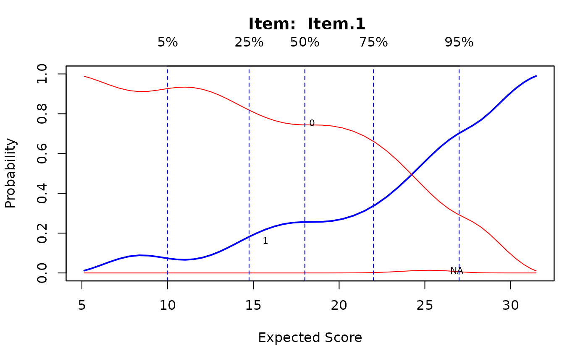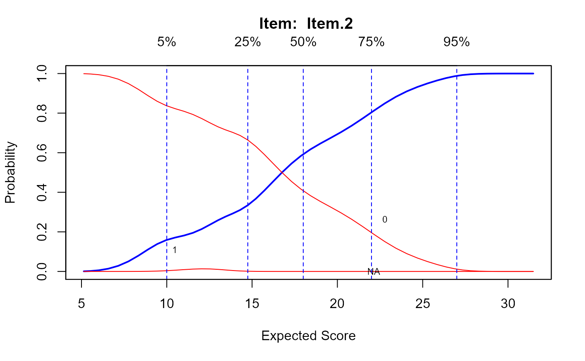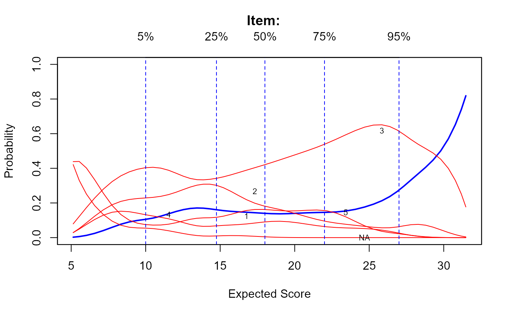# 3rd category as correct ks <- ksIRT(cbind(dat, SAT12[,32]), c(rep(1, 31), 3), 1) plot(ks, items = c(1,2,32))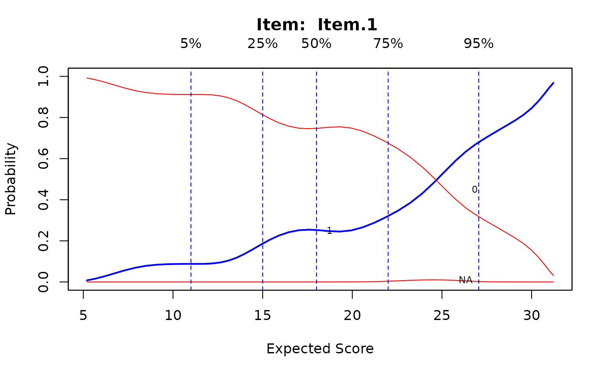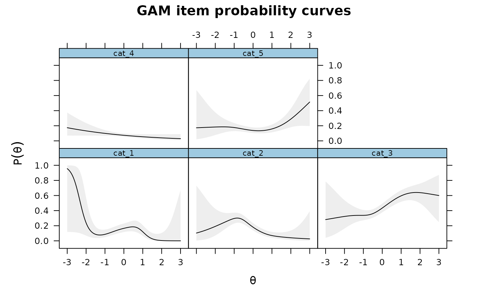set.seed(1423) ThetaPV <- fscores(mod, plausible.draws=10) IG2 <- itemGAM(SAT12[,32], ThetaPV) plot(IG2)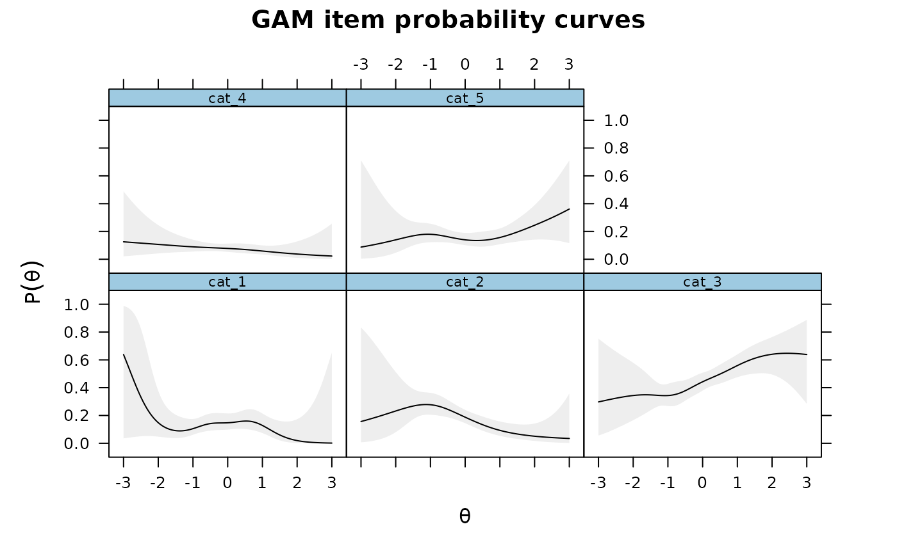# assuming a simple increasing parametric form (like in a standard IRT model) IG3 <- itemGAM(SAT12[,32], Theta, formula = resp ~ Theta) plot(IG3)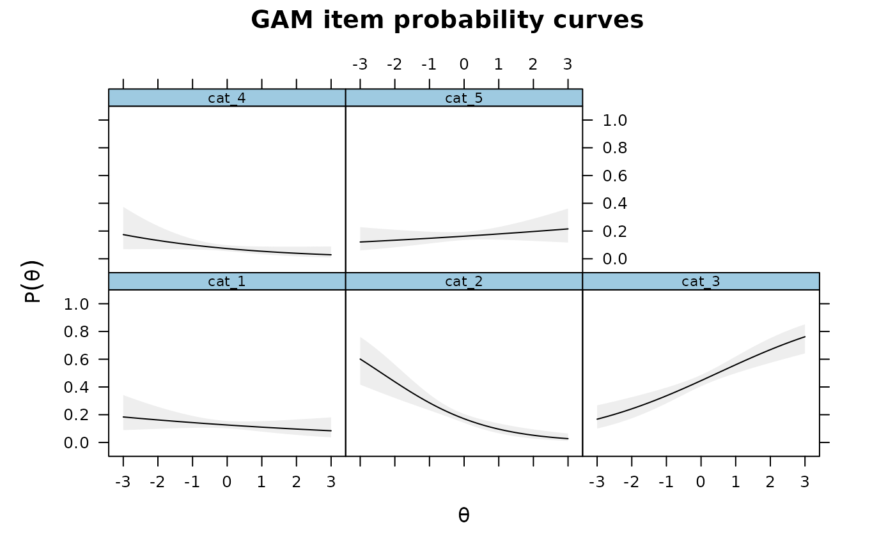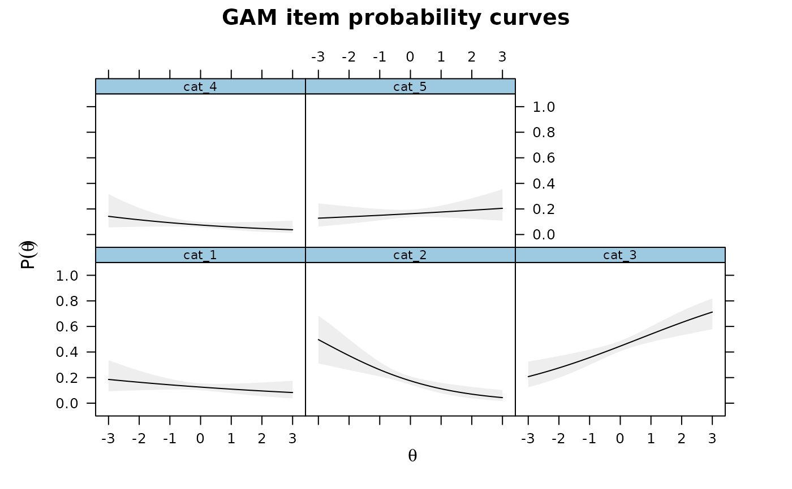### multidimensional example by returning the GAM objects mod2 <- mirt(dat, 2) Theta <- fscores(mod2) IG4 <- itemGAM(SAT12[,32], Theta, formula = resp ~ s(Theta1, k=10) + s(Theta2, k=10), return.models=TRUE) names(IG4)#> [1] "cat_1" "cat_2" "cat_3" "cat_4" "cat_5"# }